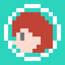

trm0_0
です。（読み方は特に決めていません）
最近HTMLやCSSを習得しました。
趣味で音楽の8bitアレンジをしたりドット絵を描いたりしています。
たまに普通の楽器も弾きます。（キーボード・シンセサイザー・ベース・ギターなど）

trm0_0
です。（読み方は特に決めていません）
最近HTMLやCSSを習得しました。
趣味で音楽の8bitアレンジをしたりドット絵を描いたりしています。
たまに普通の楽器も弾きます。（キーボード・シンセサイザー・ベース・ギターなど）
こんなのを作っています(8bitアレンジ)
ハートに火をつけて/9mm Parabellum Bullet
ばかみたい/桐生一馬（黒田崇矢）
モス/サカナクション
他の8bit・DTM音源はこちら
-LISTEN MORE-こんなのを描いています